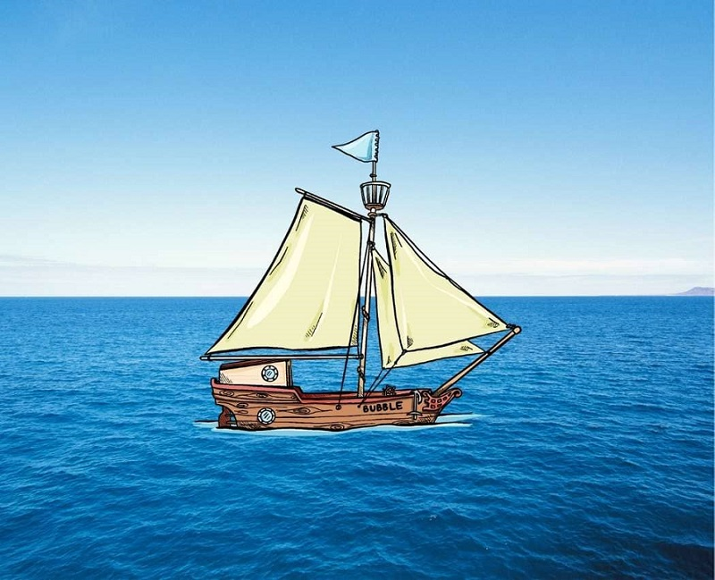

Retour aux projets
// projet · BTS SIO · 2023
SicilyLines
Application de bureau en C# pour gérer les traversées d'une compagnie maritime : ajout, modification et suppression des traversées et de leur durée.

Contexte
SicilyLines est une compagnie maritime privée de transport rapide de passagers : plus de 600 salariés et plus d'un million et demi de passagers par an. Son site permet aux internautes de consulter les liaisons, les tarifs et les horaires, et de réserver en ligne à partir d'une base de données.
Ce que j'ai réalisé
- Une interface graphique WinForms pour gérer les traversées sans passer directement par la base de données.
- Les opérations d'ajout, de modification et de suppression d'une traversée, avec sa durée.
- La connexion à la base de données SQL de la compagnie.